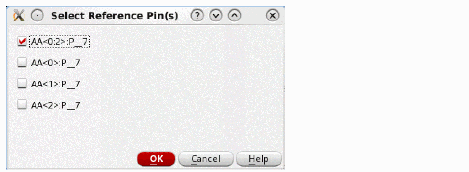
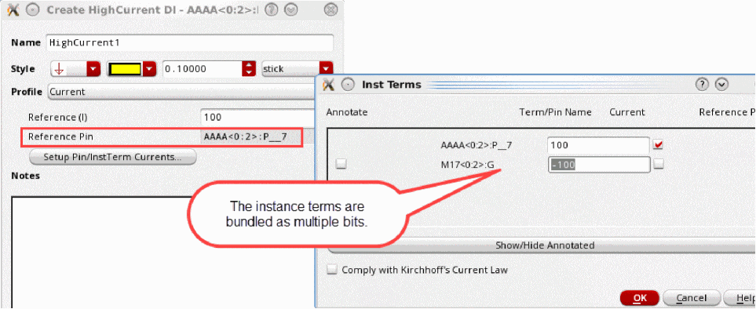
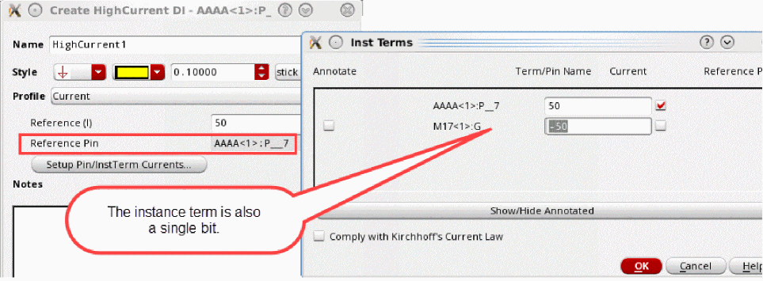
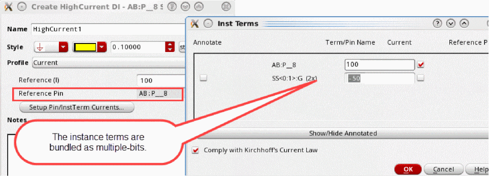

Creating a HighCurrent Design Intent for Multiple-bit Instances
To create a design intent for a multiple-bit pin or instance, or for a single-bit instance with currents connected to a multiple-bit instance terminal or pin:
-
Right-click the net, pin, or instance terminal in the Navigator or on the canvas and choose Design Intent – Create Design Intent – HighCurrent.
If you are creating the design intent for a multiple-bit pin connected to multiple-bit instance terminals, the Select Reference Pin(s) form appears listing the pins that are available for selection.
 - Select whether the reference pin for the design intent is to be a bundled multiple-bit pin or a single-bit pin and click OK.
- Specify a name and style for the design intent.
- In the Profile field, Current is the only profile available for the HighCurrent design intent category and must not be overridden with a user-defined profile. Specify the requirements for the following pre-defined properties:
-
Click Setup Pin/InstTerm Currents.
The Inst Terms dialog box opens. It lists all instance terminals available on the net and lets you define the current for each instance terminal to be sourced. -
Enter the current value for the required instance terminals or pins.
For multiple-bit pins connected to multiple-bit instance terminals, the terminals listed are determined by what you selected on the Select Reference Pin(s) form. If you specified that the reference pin is a multiple-bit instance, the instance terms are bundled as multiple bits. The current value specified applies equally to each instance term within the bundle. A current of100uAwould be allocated to each of the instance termsM17<0>:G,M17<1>:G, andM17<2>:G.
If you specified that the reference pin is a single-bit instance, the instance term is also single bit. The Current value applies to the single-instance term.
For single-bit pins connected to multiple-bit instance terminals, the reference pin is the single-bit pin. The instance terms are bundled as multiple bits. The Current value you specify is shared between each instance term within the bundle. A current of100uAwould be allocated as50uAtoSS<0>:Gand50uAtoSS<1>:G.
 -
Click OK.
If you attempt to close the Inst Terms dialog box with the Comply with Kirchhoff's Current Law check box selected and the total current does not equal zero, a warning message is displayed. -
In the Create Design Intent form, add any notes to assist in the implementation of the design intent and click OK.
A HighCurrent design intent is created on the canvas and the annotation label displays the total current.
Related Topics
Creating a HighCurrent Design Intent
Modifying Sample Profiles and Property Definitions
Return to top